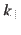

Next: Oxygenates as Reactant (Steps Up: Results and Discussion Previous: Kinetic Model Development
Since excess H (molar ratio of H
(molar ratio of H to glycerol
to glycerol  10) is used in all cases,
H
10) is used in all cases,
H pressure effect was considered as a constant contribution to the reaction rates.
Kinetic measurements were carried out at various temperatures in the range 300-450
pressure effect was considered as a constant contribution to the reaction rates.
Kinetic measurements were carried out at various temperatures in the range 300-450  C.
Although only results at 400 C are shown below, since it gives optimum aromatic yields [#!Xiao2016!#],
fitting results for other temperatures gave essentially the same conclusions.
C.
Although only results at 400 C are shown below, since it gives optimum aromatic yields [#!Xiao2016!#],
fitting results for other temperatures gave essentially the same conclusions.
When glycerol was fed as reactant, under differential operating conditions, all lumped components (oxygenates, gases and aromatics) were detected. By varying glycerol feed flow rate, its consumption rate corresponding to its average bed partial pressure, was measured, as shown and fitted in Figure 3.
Being the first step of the network, the consumption rate of glycerol depends only on glycerol partial pressure. Since a linear fit works well, step R1 appears to be first-order, which is consistent with the literature [#!Akizuki2012!#,#!Talebian-Kiakalaieh2014!#,#!Park2015!#,#!Talebian-Kiakalaieh2015!#]. Thus, Eq. (3) can be rewritten as Eq. (9).
From slope of the line in Figure 3, the value of at 400 C is 0.278
Yang Xiao 2017-12-05